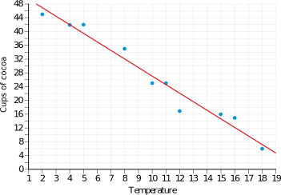
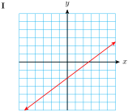
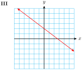
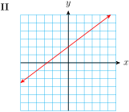
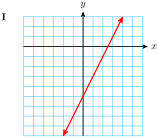
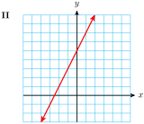
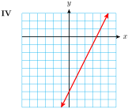
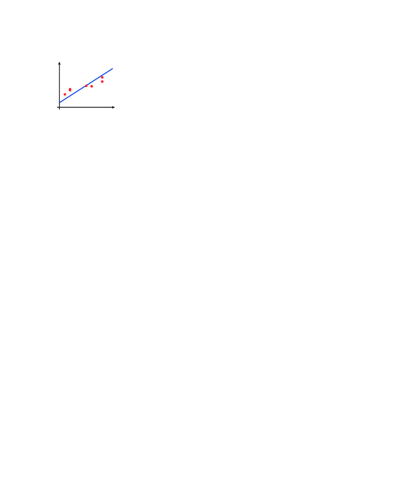
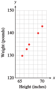

The Amazon Basin in South America contains over half of the planet’s rain forest. The Amazon rain forest is home to the largest collection of plant and animal species in the world, including more than one-third of all living species. During the 1960s, colonists began cutting down the rain forest to clear land for agriculture. The construction of the Trans-Amazonian Highway in the early 1970s opened large forest areas to development by settlers and commercial interests, increasing the rate of deforestation.
Environmentalists are concerned about the loss of biodiversity which will result from destruction of the forest, and about the release of the carbon contained within the vegetation, which could accelerate global warming.
In Brazil, the Instituto Nacional de Pesquisas Espaciais (INPE, or National Institute of Space Research) uses Landsat satellite photos to monitor the pace of deforestation. According to their data, the original Amazon rain forest biome in Brazil of 4,100,000 square kilometers was reduced to 3,413,000 square kilometers by 2005, representing a loss of 16.8%. The figures for 1987 to 2006 are shown at right, and a plot of the data appears below. \(~\alert{\text{[TK]}}\)
Year
Remaining forest (thousands sq km)
1987
3745
1988
3274
1989
3706
1990
3692
1991
3681
1992
3667
1993
3652
1994
3637
1995
3608
1996
3590
1997
3577
1998
3560
1999
3542
2000
3524
2001
3506
2002
3485
2003
3460
2004
3432
2005
3413
2006
3400
Although the data points do not all lie exactly on a straight line, they are very close. One question we might ask is: If deforestation continues at the same rate, when will the Amazon rain forest disappear completely? In this section we learn to find a linear model that approximates a data set.
Subsection2.1.2Line of Best Fit
In most cases, a mathematical model is not a perfect description of reality. Many factors can affect empirical data, including measurement error, environmental conditions, and the influence of related variables. Nonetheless, we can often find an equation that approximates the data in a useful way.
Example2.1.1.
The table shows the minimum wage in the US at five-year intervals. (Source: Economic Policy Institute)
Year
1960
1965
1970
1975
1980
1985
1990
1995
2000
Min. wage
1.00
1.25
1.60
2.10
3.10
3.35
3.80
4.25
5.15
Let \(t\) represent the number of years after 1960, and plot the data. Are the data linear?
Draw a line that "fits" the data. \(~\alert{\text{[TK]}}\)
The graph shown is called a scatterplot. The data are not strictly linear, because the slope is not constant: from 1960 to 1965, the minimum wage increased at an average rate of
\begin{equation*}
\dfrac{1.25-1.00}{5}=0.05~ \text{dollars per year}
\end{equation*}
and from 1970 to 1975, the minimum wage increased at a rate of
\begin{equation*}
\dfrac{2.10-1.60}{5}=0.10~ \text{dollars per year}
\end{equation*}
However, the data points do appear to lie close to an imaginary line.
We would like to draw a line that comes as close as possible to all the data points, even though it may not pass precisely through any of them. In particular, we try to adjust the line so that we have the same number of points above the line and below the line. One possible solution is shown in the figure at right.
A line that fits the data in a scatterplot is called a regression line. Drawing a regression line by eye is a subjective process. Using technology, we can compute a particular regression line called the least-squares regression line, which is widely used in statistics and modeling.
We can still find an equation for a line of best fit using the point-slope formula. (To review using the point-slope formula, see Finding a Linear Model in Section 1.5.) We choose two points on the line whose coordinates we can estimate fairly accurately. Note that these two points need not be any of the original data points.
The regression line in the Example above appears to pass through the points \((5, 1.25)\) and \((25, 3.35)\text{.}\) Use those points to find an equation for the regression line. \(~\alert{\text{[TK]}}\)
An outdoor snack bar collected the following data showing the number of cups of cocoa, \(C\text{,}\) they sold when the high temperature for the day was \(T\degree\) Celsius.
Temperature (\(\degree\text{C}\)), \(T\)
2
4
5
8
10
11
12
15
16
18
Cups of cocoa, \(C\)
45
42
42
35
25
25
17
16
15
6
Make a scatterplot of the data, and draw a regression line
Read values from your line for the number of cups of cocoa that will be sold when the temperature is \(8\degree\text{C}\) and when the temperature is \(16\degree\text{C}\text{.}\)
Find an equation for the regression line.
Use your equation to predict the number of cups of cocoa that will be sold when the temperature is \(9\degree\text{C}\text{,}\) and when the temperature is \(24\degree\text{C}.\)
The scatterplot and a regression line are shown in the figure.

The regression line need not pass through any of the data points, but it should be as close as possible. We try to draw the regression line so that there are an equal number of data points above and below the line.
The points \((8, 32)\) and \((16, 12)\) appear to lie on the regression line. According to this model, the snack bar will sell 32 cups of cocoa when the temperature is \(8\degree\text{C}\text{,}\) and 12 cups when it is \(16\degree\text{C}\text{.}\) These values are close to the actual data, but not exact.
To find an equation for the regression line, we use two points on the line—not data points! We will use \((8, 32)\) and \((16, 12)\text{.}\) First we compute the slope
Because the snack bar cannot sell \(-8\) cups of cocoa, this prediction is not useful. (What is the Fahrenheit equivalent of 24°C?)
Using a regression line to estimate values between known data points is called interpolation. If the data points lie fairly close to the regression line, then interpolation will usually give a fairly accurate estimate. In the Example above, the estimate of 29 or 30 cups of cocoa at \(9\degree\text{C} \) seems reasonable in the context of the data.
Making predictions beyond the range of known data is called extrapolation. Extrapolation can often give useful information, but if we try to extrapolate too far beyond our data, we may get unreasonable results. The conditions that produced the data may no longer hold, as in the Example above, or other unexpected conditions may arise to alter the situation.
Use your regression equation from the previous Example to predict the number of cups of cocoa sold when the temperature is \(-10^\circ\text{C} \text{.}\)
Predict the number of cups of cocoa sold when the temperature is \(7^\circ\text{C}\text{.}\)
Which prediction is more likely to be accurate? Why?
The data in a scatterplot may show a linear trend, even though the individual points are not clustered closely around a line. Scattering of data is common in the social sciences, where many variables may influence a particular situation. Nonetheless, by analyzing the data, we may be able to detect a connection between some of the variables.
Example2.1.7.
The world’s population is growing at different rates in different nations. Many factors, including economic and social forces, influence the birthrate. Is there a connection between birth rates and education levels? The figure below shows the birth rate plotted against the female literacy rate in 148 countries.
Draw a line of best fit for the data points.
Locate on the scatterplot the points representing the following nations
Country
Literacy rate
Birth rate
Ethiopa
33.8
5.33
Iraq
53.0
4.28
Libya
71.0
3.34
Maldives
96.4
5.02
Morocco
31.0
2.73
Niger
9.4
6.75
Data points that lie far from the regression line are called outliers. Which of the nations listed in part (b) could be considered outliers?
\(-0.05\) births per woman per percentage point. The birth rate decreases by 0.05 births per woman for each percentage point increase in the female literacy rate.
Exercises2.1.5Problem Set 2.1
Warm Up
1.
Choose the correct graph for each equation. The scales on both axes are the same.
\(\displaystyle y=\dfrac{3}{4}x+2\)
\(\displaystyle y=\dfrac{-3}{4}x+2\)
\(\displaystyle y=\dfrac{3}{4}x-2\)
\(\displaystyle y=\dfrac{-3}{4}x-2\)


2.
Choose the correct graph for each equation. The scales on both axes are the same.
\(\displaystyle y=1+2(x+3)\)
\(\displaystyle y=-1+2(x-3)\)
\(\displaystyle y=-1+2(x+3)\)
\(\displaystyle y=1+2(x-3)\)


Exercise Group.
In Problems 3 and 4, find a linear model from two data points as follows:
Make a table showing the coordinates of two data points for the model. (Which variable should be plotted on the horizontal axis?)
Write an equation for the line.
State the slope of the line, including units, and explain its meaning in the context of the problem.
3.
On an international flight a passenger may check two bags each weighing 70 kilograms, or 154 pounds, and one carry-on bag weighing 50 kilograms, or 110 pounds. Express the weight, \(p\text{,}\) of a bag in pounds in terms of its weight, \(k\text{,}\) in kilograms.
4.
Ms. Randolph bought a used car in 2010. In 2012 the car was worth $9000, and in 2015 it was valued at $4500. Express the value, \(V\text{,}\) of Ms. Randolph’s car in terms of the number of years, \(t\text{,}\) she has owned it.
Skills Practice
5.
Find the slope, the \(C\)-intercept, and the \(T\)-intercept for the regression line in Example 2.1.4.
What do the slope and the intercepts tell us about the sale of cocoa?
6.
The number of manatees killed by watercraft in Florida waters has been increasing since 1975. Data are given at 5-year intervals in the table, and a scatterplot with regression line is shown below. (Source: Florida Fish and Wildlife Conservation Commission)
Year
Manatee deaths
\(1975\)
\(6\)
\(1980\)
\(16\)
\(1985\)
\(33\)
\(1990\)
\(47\)
\(1995\)
\(42\)
\(2000\)
\(78\)
An equation for the regression line is \(y=4.7+2.6t\)
Use the regression equation to estimate the number of manatees killed by watercraft in 1998.
What does the slope of the regression line mean in this situation?
Which data point might be considered an outlier?
Exercise Group.
In Problems 7 and 8, the regression lines can be improved by adjusting either \(m\) or \(b\text{.}\) Draw a line that fits the data points more closely.
7.

8.
Exercise Group.
For Problems 9 and 10,
Use the point-slope formula to write an equation.
Use linear interpolation to give approximate answers.
What does the slope tell us about the problem setting?
9.
Newborn blue whales are about 24 feet long and weigh 3 tons. The young whale nurses for 7 months, at which time it is 53 feet long. Estimate the length of a 1-year-old blue whale.
10.
A truck on a slippery road is moving at 24 feet per second when the driver steps on the brakes. The truck needs 3 seconds to come to a stop. Estimate the truck’s speed 2 seconds after the brakes were applied.
Exercise Group.
In Problems 11 and 12, use linear interpolation or extrapolation to answer the questions.
11.
The temperature of an automobile engine is \(9\degree\) Celsius when the engine is started and \(51\degree\)C seven minutes later. Use a linear model to predict the engine temperature for both 2 minutes and 2 hours after it started. Are your predictions reasonable?
12.
The elephant at the City Zoo becomes ill and loses weight. She weighed 10,012 pounds when healthy and only 9641 pounds a week later. Predict her weight after 10 days of illness.
Applications
13.
The scatterplot shows the ages of 10 army drill sergeants and the time it took each to run 100 meters, in seconds.
What was the hundred-meter time for the 25-year-old drill sergeant?
How old was the drill sergeant whose hundred-meter time was 12.6 seconds?
Use a straightedge to draw a line of best fit through the data points.
Use your line of best fit to predict the hundred-meter time of a 28-year-old drill sergeant.
Choose two points on your regression line and find its equation.
Use the equation to predict the hundred-meter time of a 40-year-old drill sergeant and a 12 year-old drill sergeant. Are these predictions reasonable?
14.
The scatterplot shows the weights in pounds and the heights in inches of a team of distance runners.

Use a straightedge to draw a line that fits the data.
Use your line to predict the weight of a 65-inch tall runner and the weight of a 71-inch tall runner.
Use your answers from part (b) to approximate the equation of your regression line.
Use your answer from part(c) to predict the weight of a runner who is 68 inches tall.
15.
The scatterplot shows the best times for various women running the 400 meters and the 100 meters.
Use a straightedge to draw a line that fits the data.
Use your line to predict the 400-meter time of a woman who runs the 100-meter dash in 11.2 seconds, and the 400-meter time of a woman who runs the 100-meter dash in 13.2 seconds.
Use your answers from part (b) to approximate the equation of your regression line.
Use your answer from part (c) to predict the the 400-meter time of a woman who runs the 100-meter dash in 12.1 seconds.
16.
The table shows the minimum wage in the United States at five-year intervals. (Source: Economic Policy Institute)
Year
\(1960\)
\(1965\)
\(1970\)
\(1975\)
\(1980\)
\(1985\)
\(1990\)
\(1995\)
\(2000\)
\(2005\)
\(2010\)
Minimum wage
\(1.00\)
\(1.25\)
\(1.60\)
\(2.10\)
\(3.10\)
\(3.35\)
\(3.80\)
\(4.25\)
\(5.15\)
\(5.15\)
\(7.25\)
Let \(t\) represent the number of years after 1960 and plot the data. Draw a line of best fit for the data points.
Find an equation for your regression line.
Estimate the minimum wage in 1972.
Predict the minimum wage in 2025.
17.
With Americans’ increased use of faxes, pagers, and cell phones, new area codes are being created at a steady rate. The table shows the number of areacodes in the US each year. (Source: USA Today, NeuStar, Inc.)
Year
\(1997\)
\(1998\)
\(1999\)
\(2000\)
\(2001\)
\(2002\)
\(2003\)
Number of area codes
\(151\)
\(186\)
\(204\)
\(226\)
\(239\)
\(262\)
\(274\)
Let \(t\) represent the number of years after 1995 and plot the data. Draw a line of best fit for the data points.
Find an equation for your regression line.
How many area codes do you predict for 2010?
18.
The table shows the amount of carbon released into the atmosphere annually from burning fossil fuels, in billions of tons, at 5-year intervals from 1950 to 1995. (Source: www.worldwatch.org)
Year
\(1950\)
\(1955\)
\(1960\)
\(1965\)
\(1970\)
\(1975\)
\(1980\)
\(1985\)
\(1990\)
\(1995\)
Carbon emissions
\(1.6\)
\(2.0\)
\(2.5\)
\(3.1\)
\(4.0\)
\(4.5\)
\(5.2\)
\(5.3\)
\(5.9\)
\(6.2\)
Let \(t\) represent the number of years after 1950 and plot the data. Scale the \(t\)-axis from 0 to 50 by 5’s, and the \(C\)-axis from 0 to 7 by 0.5’s.
Draw a line of best fit for the data points.
Find an equation for your regression line.
Estimate the amount of carbon released in 1992.
19.
Male birds with the largest repertoire of songs are the first to acquire mates in the spring. The table shows the number of different songs sung by several sedge warblers, and the days on which they acquired their mates, where day 1 is April 20. (Source: Krebs and Davies, 1993)
Number of songs, \(x\)
\(41\)
\(38\)
\(34\)
\(32\)
\(30\)
\(25\)
\(24\)
\(24\)
\(23\)
\(14\)
Pairing day, \(y\)
\(20\)
\(24\)
\(25\)
\(21\)
\(24\)
\(27\)
\(31\)
\(35\)
\(40\)
\(42\)
Plot the data points on graph paper, scale the \(x\)-axis from 0 to 65 by 5’s, and the \(y\)-axis from 0 to 60 by 5’s.
The least-squares regression line is
\begin{equation*}
y = -0.85x + 53
\end{equation*}
Graph this line on the same grid with the data. (Make a short table of values and plot the points.)
What does the slope of the regression line tell us about sedge warblers?
Use extrapolation to estimate when a sedge warbler that knows 10 songs can expect to find a mate.
What do the intercepts of the regression line represent? Do these values make sense for this situation?
20.
One measure of a person’s physical fitness is the body mass index, or BMI. Your body mass index is the ratio of your weight in kilograms to the square of your height in meters. The points on the scatterplot show the BMI of Miss America from 1921 to 1991.
Use a straightedge to draw a line of best fit on the scatterplot above.
The equation of the least-squares regression line for the data is
\begin{equation*}
y = 20.69 - 0.04t
\end{equation*}
where \(t\) is the number of years since 1920. On the figure above, relabel the horizontal axis with values of \(t\text{.}\) Then graph this line and compare to your estimated line of best fit.
Do thinner people have higher or lower BMI scores than fatter people? Use the definition of BMI to explain your reasoning.
The Center for Disease Control considers a BMI between 18.5 and 24.9 to be healthy. In 2002, Miss America was 5’3" tall and weighed 110 pounds. Calculate her BMI. (You will need to convert inches to meters and pounds to kilograms.)
What BMI score does the regression line predict for Miss America 2002?
There are no data points for the years 1928 to 1932. What happened during those years that might cause this gap?